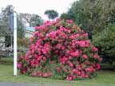
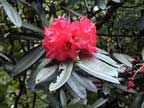
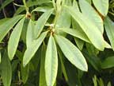
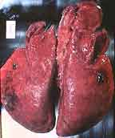

Rhododendron
Rhododendron species
Other names
Some varieties are called azaleas.
Description
An evergreen shrub growing from less than 1 m up to 5m or more. Leaves are arranged alternatively. The leaves are oblong, smooth and shiny. Flowers are of various colours (usually red, purple or pink) and clustered in umbel like racemes.
Similar plants
There are more than 200 species and many hybrids in NZ.
Distribution
Common cultivated garden plant which has established in some areas.
Toxin
Contains diterpenes and the glycoside andromedotoxin (cf lily of the valley tree) which has a curare like effect on the motor end plates of skeletal muscle and an inhibitory action on the conducting tissue of the heart. This is due to andromedotoxin binding to the sodium channels of cell membranes resulting in prolonged depolarisation and excitation. Depression of the CNS occurs and death is due to respiratory failure. Poisoning usually occurs from stock eating prunings or clippings.
Species affected
All species that have access to the plant.
Clinical signs acute
Same in all species. Salivation, vomiting greenish froth usually seen around the mouth, colic, constipation or diarrhoea, trembling, weakness, collapse and death.
Clinical signs chronic
Post mortem signs
There is little evidence of inflammation post mortem. Congestion of the lungs has been reported.
Diagnosis
Relies on history of ingestion and clinical signs.
Differential diagnosis
Treatment
Detoxify the animal when appropriate. Activated charcoal should be used repeatedly the first 24 hours after ingestion. Non specific, symptomatic care. Keep animal warm and comfortable.
Prognosis
Depends on the quantity ingested.
Prevention
References
Conner H.E. The Poisonous Plants In New Zealand. 1992. GP Publications Ltd, Wellington
Cooper M R, Johnson A W. Poisonous Plants and Fungi in Britan: Animals and Human Poisoning. Her Majesty’s Stationary Office. London. 1998
Parton K, Bruere A.N. and Chambers J.P. Veterinary Clinical Toxicology, 2nd ed. 2001. Veterinary Continuing Education Publication No. 208
|  bush |
 |
|
|
 |
||
|
|
||
|
|
|
|
 sheep lungs |